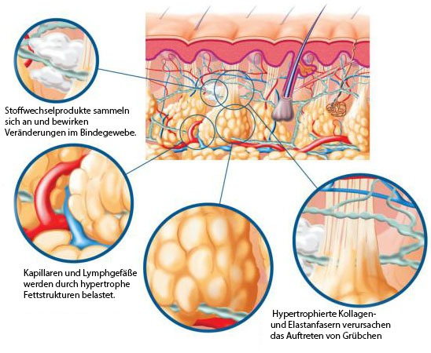
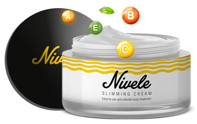
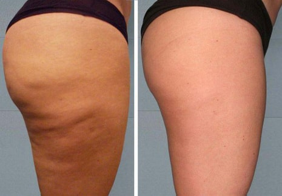
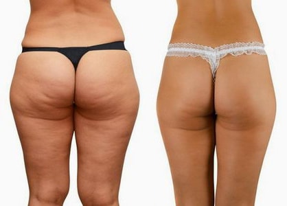
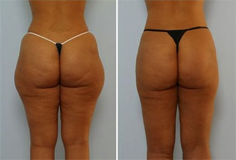
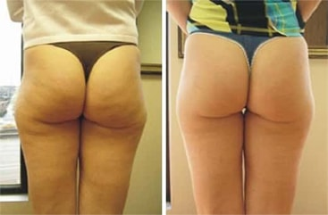
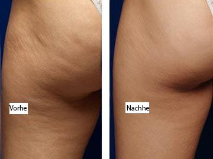
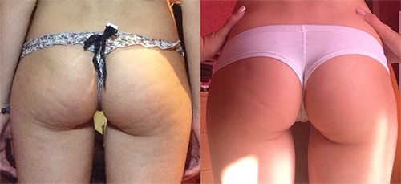

Da dieses Problem eine Menge Personen betrifft – statistisch gesprochen tritt Zellulite bei 80-90% der Frauen auf – entschieden wir uns dazu, dieses Thema im Detail anzusehen.
Dermatologen und Physiotherapeuten gehen mit dem Problem von Zellulite professionell um. Physiotherapeutische Methoden eigenen sich für Olga nicht, daher haben wir eine Dermatologin gefragt, auf diesen Brief zu antworten.
„Ich möchte sagen, dass Zellulite keine lebenslange Strafe ist. Die neuesten Innovationen im Bereich der Kosmetologie ermöglicht Personen mit diesem Problem selbstständig umzugehen. Wie? Zuerst ist es wichtig zu verstehen, was Zellulite ist und warum sie auftaucht?
Zellulite ist eine Änderung im Fettgewebe welches als Resultat von Störungen auftritt, wenn das Blut und die Lymphen aus den Zellen fließen. Jede Zelle ist von einer Membran umgeben. Gefäße (Blut und Lymphe) befinden sich zwischen den Membranen. Aufgrund von zahlreichen Gründen können die Zellmembranen dicker wachsen und auf die Gefäße drücken; die Blutversorgung der Zellen verschlechtert sich und die Zerbrechlichkeit der Gefäße steigern. Zellulite in diesem Stadium nicht sichtbar.
Dann werden die Lymphgefäße beeinflusst. Der Stoffwechselprozess in den Zellen wird aufgehalten, die Sauerstoff- und Vitaminversorgung verschlechtern sich und Giftstoffe sammeln sich an. Die Zellulite wird sichtbar. Wenn der Prozess weiterhin fortfährt steigt die Zellulite zu weiteren Stadien an. Es bilden sich (durch die Ansammlung von gruppierten Zellen) Beulen auf der Hautoberfläche, welche anschwellen und zu jucken beginnen.
Dennoch wird Zellulite nicht als Krankheit angesehen Zellulite ist eine Gleichgewichtsstörung des Körpers und die Funktionen alle Organe und System müssen ausgeglichen sein, um sie eliminieren zu können.
Hier sind die meistverbreiteten Ursachen von Zellulite:
Wir können mindestens 3 von 5 Faktoren beeinflussen!
Zellulite ist am besten heilbar, wenn ein komplexer Ansatz angewendet wird.
Was soll man Essen, wenn man Zellulite hat? Notwendigerweise hat dies nichts mit einer Diät zu tun und hungern ist definitiv auch nicht der richtige Weg. Ihr Körper wird ganz einfach zugängliche Fettreserven verbrennen, während die Zellulite an Ort und Stelle bleibt und sich sogar verschlimmert. Trinken Sie ausreichend Wasser (ungefähr 2 Liter am Tag), schließen Sie schädliche Tierfette, Süßigkeiten und Konfekte aus Ihrer Ernährung aus, essen Sie genügend Gemüse und Früchte und verwenden Sie pflanzliche Öle (diese erhalten die Hautelastizität, normalisieren den Lipidstoffwechsel und stärken die Kapillaren).
Warum ist das Betreiben von Sport nicht hilfreich? Ein Fitnessstudio ist nicht der beste Ort für eine Frau, die ihre Zellulite loswerden möchte. Das Fettgewebe wird durch das Muskelwachstum ausgetrieben und die Zellulite wird dominanter. Zuerst muss man überschüssiges Fett los werden, und dann Kraftübungen anwenden. Laufen, Schwimmen und Aerobic sind gegen Zellulite hilfreich.
Es ist WICHTIG, die Problemzone Zuhause zu massieren. Es ist sehr schwierig Zellulite ohne externe Einflüsse loszuwerden. Glücklicherweise gibt es heutzutage großartige Kosmetikprodukte, die effektiv gegen Zellulite ankämpfen und das Problem direkt beeinflussen.
Nach meiner Erfahrung zeigte bei mir die Nivele Creme die besten Ergebnisse, welche in Deutschland erschien. Die Effektivität von basiert auf einer hohen Konzentration von Koffein.
Koffein ist heutzutage der beliebteste, natürliche, simulierende und gefäßerweiternde Wirkstoff, das effektiv gegen Unterhautfette ankämpft und die Desintegration durch seine einzigartigen Funktionen aktiviert. Dazu beschleunigt Koffein den Stoffwechsel, normalisiert Lymphdrainage und stimuliert die Blutzirkulation.
Was passiert, wenn Sie auftragen? Zuerstwerden die toten Zellen durch einen Peeling auf der Haut entfernt. Dadurch wird die Zirkulation bis in die unteren Fettschichten angekurbelt, , wobei sich die Zellnährstoffe verbessern
Zweitens bildet sich der Effekt einer ‚Mini-Sauna’ unter der aufgewärmten Haut: das Lymphsystem wird aktiviert und Giftstoffe werden vom Körper eliminiert. Äußerliche natürliche Prozesse des Körpers werden durch Zellulite beeinträchtigt. Wenn die Zellmembrane (dank der Wirkung der Creme-Inhaltsstoffe) wieder richtig arbeitet, beginnt der Abbau des überschüssigen Fettgewebes. Aufgelöste Lipide werden aus dem Körper ausgeschieden, was bedeutet, dass sich der Stoffwechsel normalisiert. Dabei nimmt das Körpervolumen ab und die Haut kann an Elastizität verlieren und erschlaffen. Aber die vermeidet dies; das Ringelblumenextrakt in der Zusammensetzung spendet der Haut Feuchtigkeit und liftet sie.
Es ist also möglich, Zellulite Zuhause zu bekämpfen! Und zwar nicht nur zu bekämpfen, sondern innerhalb von 3 Monaten durch die Anwendung von zu besiegen.
Hier sind die Ergebnisse meiner Patienten:
Einen Monat nach der Anwendung von :  2 Monate nach der Anwendung von :  10 Wochen nach der Anwendung Ein wichtiger Hinweis! Die Nivele Creme ist so beliebt, dass sogar Betrüger begonnen haben, Geld damit zu verdienen. Ich empfehle Ihnen, die Creme auf der Webseite eins offiziellen Unternehmens in Deutschland zu kaufen
Umso früher Sie mit dem Kampf gegen die Zellulite beginnen, desto einfacher wird die Schlacht!
Ich hoffe, dass ich das Thema detailliert abdecken konnte. Bei Bedarf bin ich immer dazu bereit, die Fragen der Leser zu beantworten.
Bleiben Sie schön und gesund!” Francis Zuckerman
NIVELE CREME
KOMMENTARE
Olga, Sie sollten Behandlungen in Schönheitssalons vermeiden! Mich fing eine Werbung ein und dafür habe ich fast 300 € ausgegeben, versuchte Mesotherapie, Lipolysis und Kavitation. Letztendlich war es nur Geldverschwendung! Es ist einfach schade, wenn es kein sichtbares Ergebnis gibt. Mein Po wurde zusätzlich noch blau und begann zu jucken. Es ist besser diese Creme zu testen. Der Preis ist bezahlbar und es fühlt sich angenehm an.
Francis, könnten Sie mir bitte einen Rat geben, wie ich die Creme richtig auftrage?
Emily, es ist ein Kinderspiel! Tragen Sie nach dem Duschen eine kleine Menge der Creme auf und reiben Sie diese auf Ihre Problemzonen. Es wird empfohlen diese Zonen für 15 Minuten zu massieren. Die Haut muss warm werden, damit sich die Poren öffnen und der Prozess dadurch gestartet werden kann. Es wird auch empfohlen, die Creme täglich anzuwenden. Viel Glück!
Mein Dermatologe hat mir auch zu dieser Creme geraten. Zuerst dachte ich, dass sie mir eh nicht helfen wird. Aber dann erklärte mir Francis, wie diese Creme funktioniert. Nun verstehe ich wo der Effekt herkommt.
Meine Zellulite ist fast vollständig verschwunden, meine Haut wurde straffer und fester. All das in nur 2 Monaten!
Vielen Dank für die Erklärung, Francis! Ich werde versuchen meine Ernährung umzustellen und mich fürs Schwimmen anmelden. Und ich werde mir sicher diese Creme kaufen. 15 Minuten pro Tag mit einer angenehmen Anwendung mit der Creme sind nicht viel, ganz besonders wenn ein solcher Effekt auftritt.
Ich kämpfe schon seit einer langen Zeit gegen Zellulite an. Ich versuchte es mit Massagen. Diese haben etwas geholfen und das Problem hat sich verbessert. Nach einem Jahr entschied ich mich, die Massagebehandlung zu wiederholen, wendete mich aber an einen anderen Spezialisten. Als Resultat verwandelte sich mein leichte Zellulite in ein schweres Problem! Deswegen sollten Sie mit Massagespezialisten vorsichtig sein. Es ist wirklich besser das Problem alleine anzugehen. Gesunde Ernährung und effizienter Sport ist das, was ich normalerweise mache. Ich werde nun auch die Creme testen. Ich habe sie bestellt und mir wurde versprochen, dass ich sie innerhalb 2 Tage erhalten werde.
Ich habe während meiner Schwangerschaft an Gewicht zugenommen. Danach habe ich etwas Gewicht verloren und die Haut an meinen Hüften wurde irgendwie schlaff. Ich versuchte Massagen und Anti-Zellulite-Peelings, aber nichts endete in einem guten Ergebnis. Kürzlich empfahl mir ein Freund diese Creme und ich bemerkte bald, dass sie MEIN Produkt ist! Ich verwende sie nun mehr als 2 Wochen und das Resultat ist bereits schon sichtbar:
Dies sind ja großartige Ergebnisse! Ich habe meinen hässlichen Po aufgegeben aber nun möchte ich diese Creme testen! Vielen Dank Olga für die Fragen und danke Francis für die Antworten. Ich habe eine Menge nützlicher Informationen erhalten. Es ist niemals zu spät, um sich um sich selbst zu kümmern, nicht wahr Girls?
So ist es! Es besuchen mich Frauen aller Altersklassen. Einige haben Glück und entwickeln erst im später im Alter von 30 Zellulite, einige bekommen sie aber schon mit 18. Aber der Mechanismus seiner Bildung ist immer der Gleiche und nun wissen Sie, wie Sie diesen beeinflussen können.
Ich hab ein paar gute Ergebnisse erhalten! Ich bin so dankbar, dass ich diesen Artikel gefunden habe. Ich verwende die Creme nun schon seit 3 Wochen, mein Po wurde straffer und runder (mein Ehemann ist glücklich). Es gibt noch immer einige Beulen aber ich bin mir sicher, dass auch diese bald verschwinden werden! Vielen Dank!
